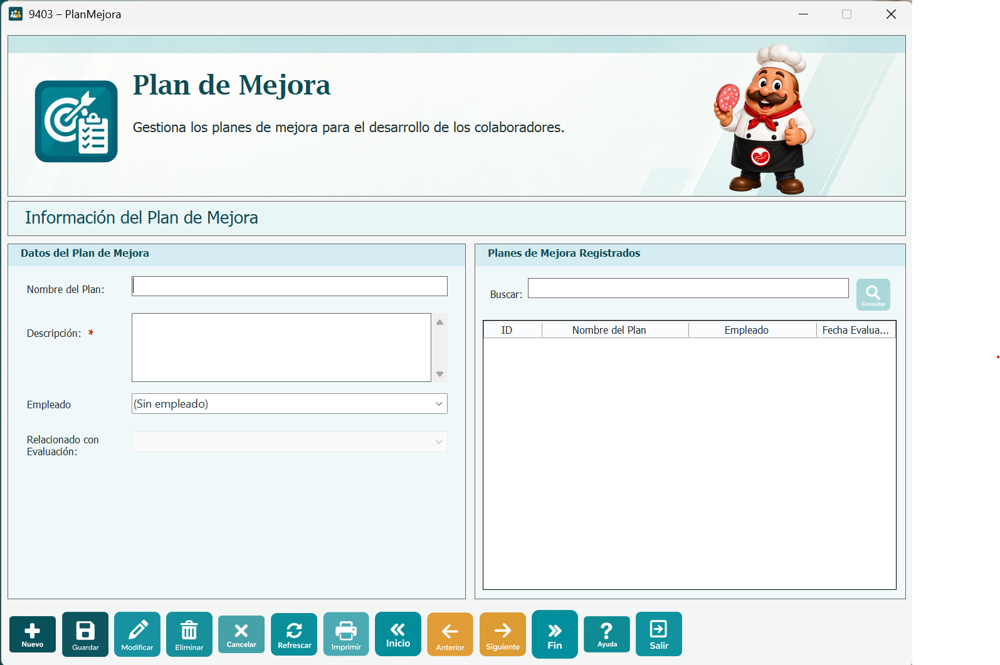
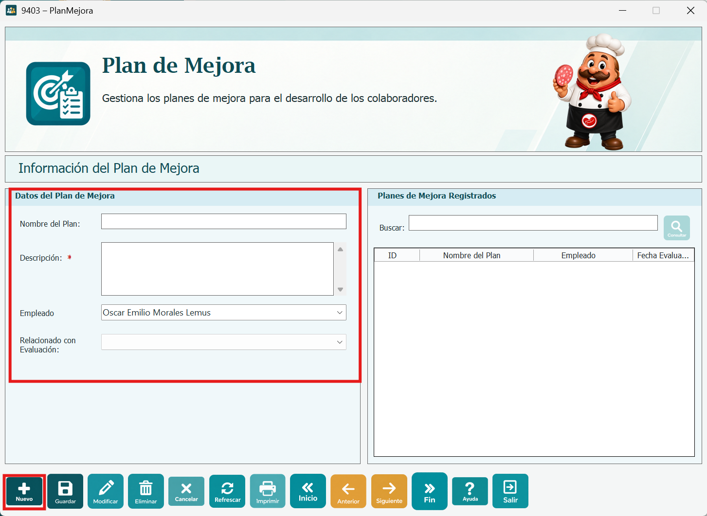
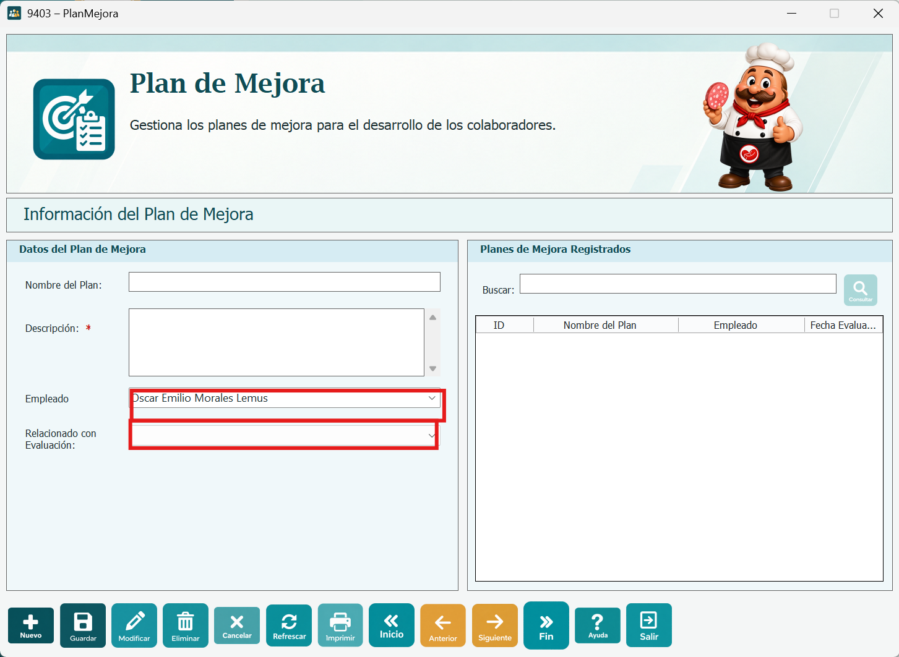
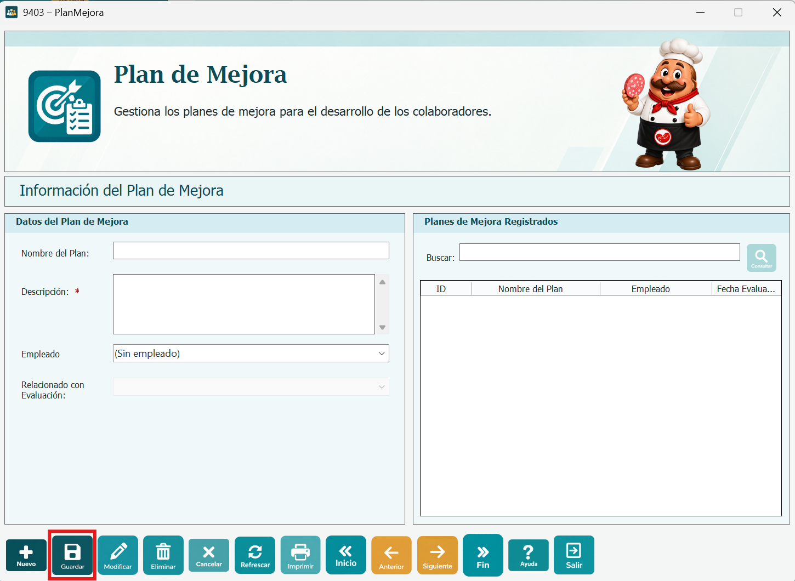
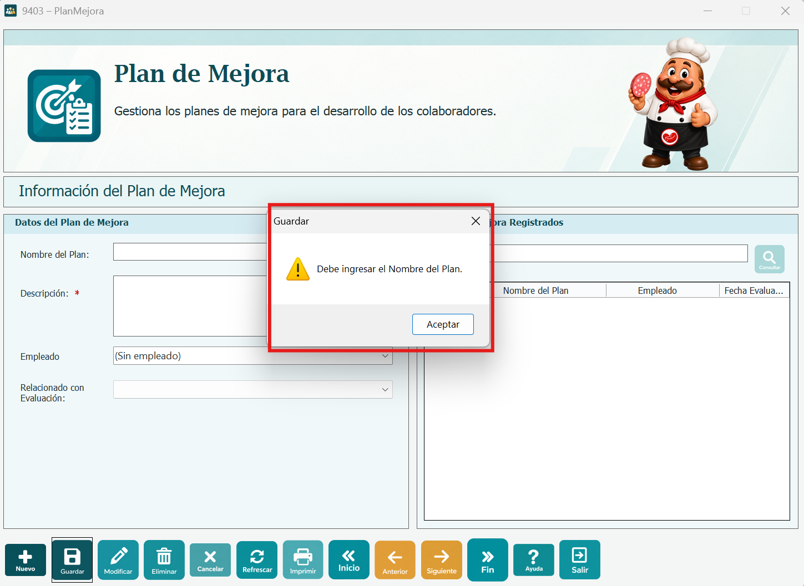
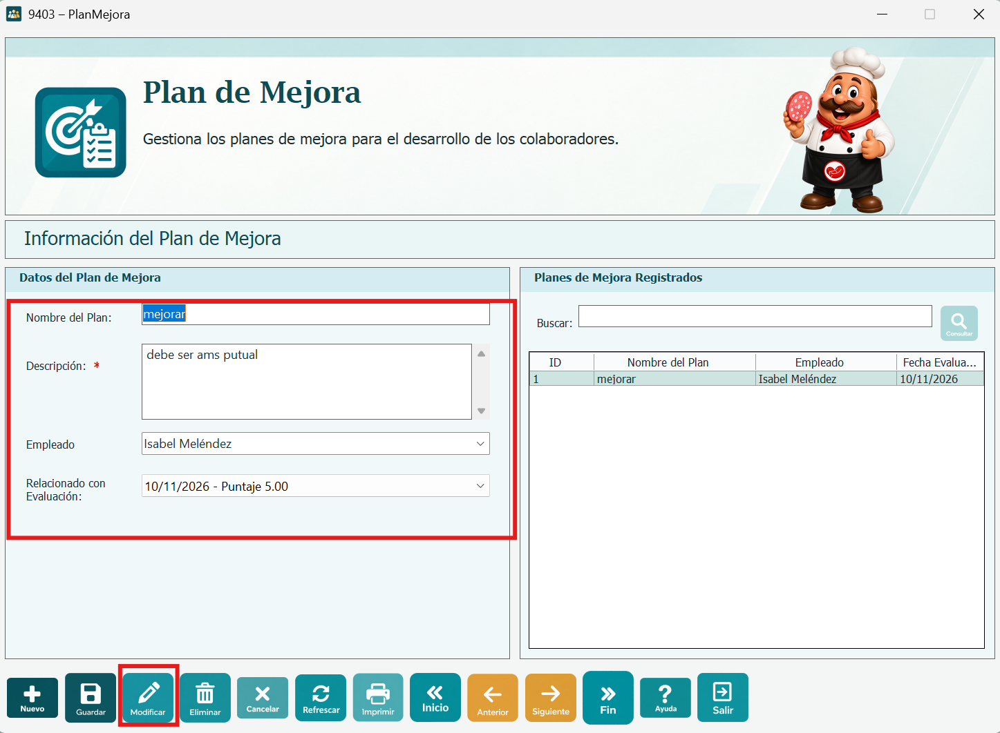
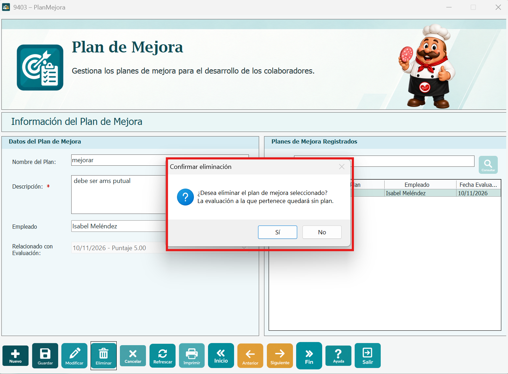
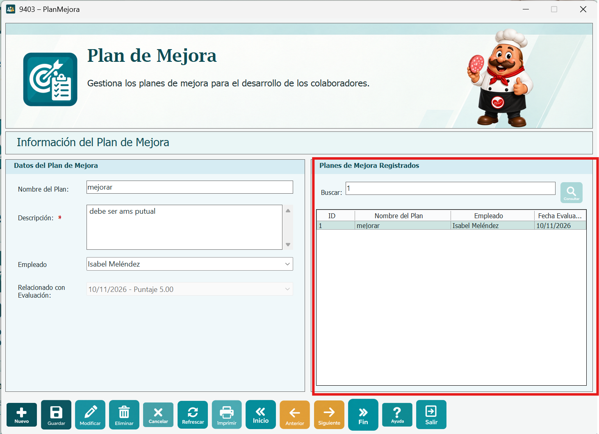
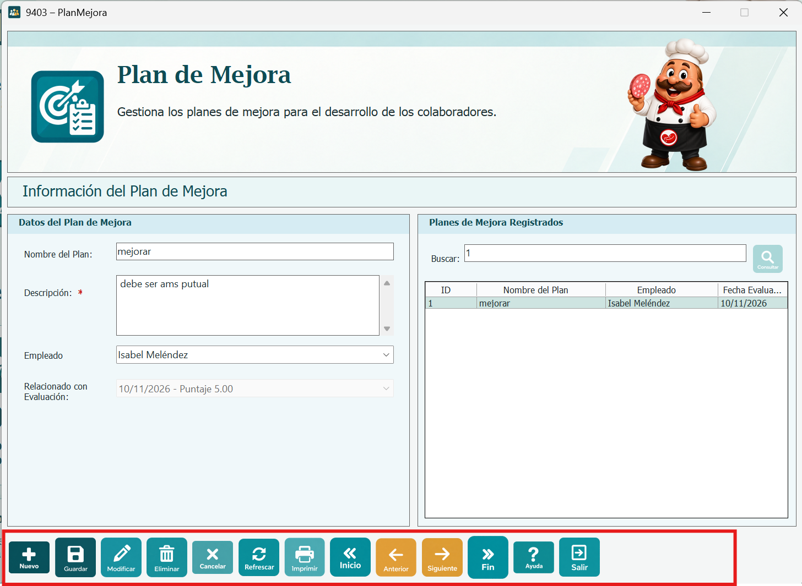

La ventana 9403 - Plan de Mejora permite registrar, modificar y eliminar planes de mejora, y relacionar cada plan con la evaluación de desempeño de un empleado. Una evaluación puede tener como máximo un plan de mejora.
A la izquierda están los Datos del Plan de Mejora y a la derecha la tabla Planes de Mejora Registrados, con el ID, el nombre del plan, el empleado y la fecha de la evaluación relacionada.

Presione Nuevo. Los campos se limpian y se habilitan para escribir. Ingrese el Nombre del Plan y la Descripción, que son obligatorios.

Para relacionar el plan con una evaluación, busque al empleado en el combo Empleado: puede elegirlo de la lista o escribir su nombre. Luego elija la evaluación en Relacionado con Evaluación; cada opción muestra la fecha y el puntaje. Solo aparecen las evaluaciones del empleado que no tienen plan o que ya tienen este mismo plan.
Si el empleado no tiene evaluaciones disponibles, se muestra el mensaje "El empleado no tiene evaluaciones disponibles. Regístrela primero en Realizar Evaluación." Si deja el Empleado en "(Sin empleado)", el plan se guarda sin evaluación.

Presione Guardar. Si los datos son correctos se muestra "Grabacion exitosa" al registrar o "Actualizacion exitosa" al modificar, y el plan queda seleccionado en la tabla.

Si algún dato no es válido, el plan no se guarda y se muestra el aviso correspondiente:
- "Debe ingresar el Nombre del Plan." o "Debe ingresar la Descripción." si alguno está vacío.
- "El Nombre del Plan no puede tener más de 100 caracteres." o "La Descripción no puede tener más de 255 caracteres."
- "Debe seleccionar la Evaluación del empleado a la que se relaciona el plan." si eligió un empleado pero no su evaluación.
- "Ya existe un plan de mejora con ese nombre." si el nombre ya está registrado.

Haga clic en una fila de la tabla para cargar el plan en los campos y presione Modificar. Cambie los datos y presione Guardar. Si no hay un plan seleccionado se muestra "Seleccione un plan de mejora de la tabla para modificarlo."

Mientras está registrando o modificando, presione Cancelar para descartar los cambios. La ventana vuelve a modo consulta y se muestra otra vez el plan que estaba seleccionado.
Seleccione un plan en la tabla y presione Eliminar. El sistema pide confirmación; al aceptar, el plan se elimina, se muestra "Eliminacion exitosa" y la evaluación a la que pertenecía queda sin plan. Si no hay un plan seleccionado se muestra "Seleccione un plan de mejora de la tabla para eliminarlo."

Escriba en el cuadro Buscar y presione el botón de búsqueda o la tecla Enter. Se muestran los planes cuyo nombre, descripción, empleado o fecha de evaluación contienen el texto; no importan mayúsculas ni minúsculas. Si no hay resultados se muestra "No se encontraron planes de mejora con ese criterio."
Sin presionar Nuevo, también puede elegir un empleado en el combo Empleado: la tabla muestra solo los planes de ese empleado. Con "(Sin empleado)" se muestran todos.

Refrescar: limpia el cuadro Buscar y vuelve a cargar los empleados y los planes registrados.
Imprimir: abre la vista previa de impresión con la imagen de la ventana, en hoja horizontal.
Inicio, Anterior, Siguiente y Fin: se desplazan entre los planes de la tabla y cargan el plan en los campos.
Ayuda: abre la página de ayuda de Evaluación de Desempeño.
Salir: cierra la ventana. Si hay cambios sin guardar, pregunta si desea salir de todas formas.

Los botones Nuevo, Modificar, Eliminar e Imprimir se habilitan según los permisos del usuario. Mientras se registra o modifica un plan, solo quedan activos Guardar y Cancelar.